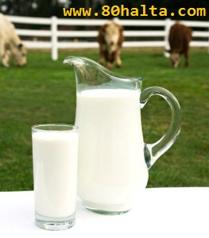

ئەسسالامۇ ئەلەيكۇم مۆھتىرەم تورداش، بلوگىمىزغا خۇش كەپسىز، قۇتلۇق قەدەملىرىڭىزگە مەرھابا!
 تۈرك چېيى دەملەش ئۇسۇلى
تۈرك چېيى دەملەش ئۇسۇلى
ئاپتورى:Birzat ۋاقتى:2013-09-28


تۈركچە چاي دەملەپ ئىچىش ئارزۇيىڭىز بولسا ياكى ھەۋەس قىلىپ قالغان بولسىڭىز يۇقۇرقى سۈرەتتە كۆرسىتىلگەندەك چەينىكىڭىز بولىشى كېرەك. تۈرك چېيى دەپ چايقۇرنىڭ ھەر خىل چايلىرىدىن سېتىۋېلىپ ئۆيدە ھەر قانچە قىلىپ چايخانىلاردىكىدەك دەملىيەلمىگەن چايخۇمارلار يالغۇز مەنلا بولمىسام كېرەك. چايقۇرنىڭ چايلىرىدىن چاققانراق بىر چەينەك قايناق سۇغا ئىككى قوشۇق، بەلكىم ئۈچ قوشۇق چاي سىلىپ خىلى ئۇزۇن قاينىتىپمۇ تۈزۈك تەمى، رەڭگى پەيدا بولماي ئاخىرى زىرىكىپ تاشلاپ قويغانلار ئەمدى مەن دېگەندەك قىلساڭلار چوقۇم تۈركچە ئاشخانا، چايخانىلاردىن قىلىشمىغۇدەك چاي دەملەشنى ئۈگۈنۈپ كېتەلەيسىلەر.
زېققا بىمارلىرى ئۈچۈن - چامغۇر شورپىسى
ئاپتورى:Birzat ۋاقتى:2012-01-05
ھەر خىل ئۇزۇنغا سوزۇلىدىغان ئاستا خاراكتېرلىك كېسەللىكلەرنى داۋالاشتا ئوزۇقلۇق-غىزانى مىزاجى ، كېسەللىك ئەھۋالىغا ماس تەڭشەش ئىنتايىن موھىم بولۇپ دورا ئارقىلىق داۋالاشقا يانداشتۇرىلىدۇ. بەزى كېسەللەر ھەتتا تېۋىپ-ھەكىملەرنىڭ تۈزۈپ بەرگەن رېتسىپلىق غىزالىرىنى بىر مۇددەت ئىستىمال قىلىپ بىرىش ئارقىلىقمۇ سەللىمازا شىپا تېپىشى مومكىن. بۇ خىل داۋالاش ئەندىزىسى ھازىرقى دۇنيادا ئەمدىلەتىن ئوتتۇرىغا قويۇلۇپ <<ئوزۇقلۇق ئارقىلىق كېسەل داۋاش>> نامىدا تەرغىپ قىلىنىۋاتقان بولسىمۇ خەلقىمىزنىڭ بۇ خىل قىممەتلىك بايلىقى مىڭ يىللار بەلكىم ئۇنىڭدىنمۇ كۆپ ۋاقىتلاردىن بىزلەرنىڭ ساغلاملىقىمىز ئۈچۈن ئەمەلىي نەپ بىرىپ كەلگەن. بىرزات ئۇستام بۇندىن كىيىن 80خالتا بلوگىدا ھەر خىل كېسەللىكلەرگە قارىتا مۇناسىپ بولغان تاماق-غىزا رېتسىپلىرى بىلەن تورداشلارنى بەھرىلەندۈرۈش ئۈچۈن تىرىشچانلىق كۆرسىتىدۇ. بۈگۈن تۇنجى قەدەمدە زېققە بىمارلىرى ئۈچۈن - چامغۇر شورپىسى تونۇشتۇرىلىدۇ.
ۋېتامىن دورىسى يېيىشنى توختاتتىڭىزمۇ؟
ئاپتورى:Birzat ۋاقتى:2011-11-02

‹ئېچكى كىسەللەر› ژورنىلىدىكى بىر تەتقىقاتتا كۆرسىتىلىشىچە، كۆپ خىللىق ۋېتامىن ۋە باشقا تۇللۇقلىما دارىلار بەلكىم سىزنىڭ ئۆمرىڭىزنى قىسقارتىۋىتىشى مۇمكىن ئىكەن. تەتقىقاتچىلار ئۆتكەن 22 يىلدا 40 مىڭدىن ئارتۇق ئاياللار (ئەمما بۇ نەتىجىنىڭ ئەرلەرگىمۇ ماس كىلىدىغىنى كۆرسىتىپ ئۆتكەن) دىن بىرنەچچە قېتىم ۋىتامىن ۋە باشقا تۇللۇقلىما دورىلانى ئىستىمال قىلىشنى ئۆزئىچىگە ئالغان سالامەتلىك ئەھۋالى توغۇرلۇق ئۇچۇلارنى توپلاپ تەتقىقات ئېلىپ بارغان. ئالىملار بۇ ئۇچۇرلارنى ئۇلارنىڭ سالامەتلىك ۋە ئۆلۈمى توغرىسىدىكى خاتىرلەر بىلەن سېلىشتۇرۇپ، ...
سۈت ئىچسە زىيان قىلىدىغان بىمارلار
ئاپتورى:Birzat ۋاقتى:2011-09-28
1. تۆمۈر كەملىكتىن بولغان قان ئازلىق كېسىلى بمارلىرى . يېمەكلىكتىكى تۆمۈر ھەزىم يولىدا ئىككىلەمچى تۆمۈرگە ئايلانغاندا ئاندىن بەدەنگە سۈمۈرلىدۇ . سۈت ئىچسە ، بەدەندىكى ئىككىلەمچى تۆمۈر بىلەن سۈتتىكى كالتىسى ، فوس تۇزلىرىدىن ئېرىمەيدىغان بىرىكمە ھاسىل بولۇپ ، تۆمۈرنىڭ سۈمۈرۈلۈشىگە تەسىر يەتكۈزۈپ ، قان ئازلىق كېسىلىنىڭ ساقىيىشىغا پايدىسىز بولىدۇ.
2. يېنىش خاراكتىرلىك قىزىل ئۆڭگەچ ياللۇغى بىمارلىرى :
خەتكۈش: سۈت
كالا سۈتى ئىسسىقمۇ-سوغۇق؟
ئاپتورى:bortala ۋاقتى:2011-09-28

ئوخشاش يېمەكلىكنىڭ ئوخشىمىغان ئادەمگە تەبىئەت جەھەتتىن(ماددىي تەسىرىنىڭ پەرقى ھەققىدە ئايرىم توختىلامىز) ئوخشىمىغان تەسىر بېرىشى، كالا سۈتىگە ئوخشاش مۆتىدىلگە يىقىن مىزاجلىق يېمەكلىكلەردە كۆپ ئۇچرايدۇ. مۆتىدىلگە مايىل يېمەكلىكلەرنىڭ ئىسسىق مىزاجلارغا ئىسسىقلىق، سوزۇق مىزاجلىقلارغا سوغۇقلۇق تەسىر بېرىشى ئىسسىقجان كىشىلەرنىڭ ئىسسىقلىققا سەزگۈر، سوغۇقجانلارنىڭ سوغۇقلۇققا سەزگۈرلۈكتىن بولۇشى مۇمكىن. ئادەتتە ئاشقازان ۋە بۆرەك مىزاجى سۇۋۇغان سوغۇقجان كىشىلەر كالا سۈتىنىڭ سوغۇق كەلگىنىنى ئېيتىدۇ؛ جىگەر ۋە ئۈچەي مىزاجى ئىسسىپ كەتكەن ئىسسىقجان كىشىلەر، ئەكسىچە سۈتنىڭ ئىسسىق كەلگىنىنى ئېيتىدۇ.
ﻗﯘﻧﺎﻕ ﭘﻮﻟﻮسى ۋە قوناق ئۇنى پوشكىلىنىڭ ﺷﯩﭙﺎﻟﯩﻖ ﺭﻭﻟﻰ
ئاپتورى:Birzat ۋاقتى:2010-11-26
ﺷﯩﭙﺎﻟﯩﻖ ﺭﻭﻟﻰ: ﺋﯘﺯﯗﻗﻠﯘﻕ ﻗﯩﻤﯩﺘﻰ ﻳﯘﻗﯩﺮﻯ بولۇپ ،ﺑﻪﺩﻩﻧﻨﻰ ﻛﯜچلەندۈرۈپ ﺋﻮﺭﮔﺎﻧﯩﺰﯨﻤﻨﻰ ﻗﯘﯞﯞﻩﺗﻠﻪﺵ . ﻣﯩﯖﻪ- ﻳﯘﺭﻩﻛﻨﻰ ﻗﯘﯞﯞﻩﺗﻠﻪﻧﺪﯛﺭﯛﺵ ،ﻗﺎﻧﺪﯨﻜﻰ ﻣﺎﻱ ﻣﺎﺩﺩﯨﺴﯩﻨﻰ ﺗﯜﯞﻩﻧﻠﯩﺘﯩﺶ، ﺯﯨﻴﺎﺩﻩﺳﯩﻤﯩﺰلىككە مەنپەئەت قىلىش، ﺋﯚﻣﯘﺭﻧﻰ ﺋﯘﺯﺍﺭﺗﯩﺶ، ﺋﯚﭘﻜﯩﻨﻰ ﻗﯘﯞﯞەﺗﻠﻪﺵ، ﻛﯚﺯﻧﻰ ﺭۇﺷﻪﻧﻠﻪﺷﺘﯜﺭﯛﺵﺧﯘﺳﯘﺳﯩﻴﺘﯩﮕﻪ ﺋﯩﮕﻪ. تۆۋەندە قوناق پولۇسىنى ئېتىش ئۇسۇلى تونۇشتۇرىلىدۇ:
خانىملار، سىلەر زەيتۇن يېغىدا قانداق قورۇما-تائاملارنى پۇشۇرىسىلەر؟
ئاپتورى:Birzat ۋاقتى:2010-10-30

زەيتۇن مېيىنىڭ تېبابەت كىتابلىرىدا بايان قىلىنغان خۇسۇسىيەتلىرى ئاساسلىقى ﮬﻪﺭ ﻗﺎﻳﺴﻰ ﺋﻪﺯﺍﻻﺭﻏﺎ ﻗﯘﯞﯞﻩﺕ ﺑﯩﺮﯨﺶ، ﻗﻮﻳﯘﻕ ﻳﻪﻟﻠﻪﺭﻧﻰ ﺗﺎﺭﻗﯩﺘﯩﺶ، ﺋﺎﻏﺮﯨﻖ ﺗﻮﺧﺘﯘﺗﯘﺵ، ﺗﯧﺮﻩ ﻗﯘﺭﻏﺎﻗﻠﯩﺸﯩﺸﻨﻰ ﺗﻮﺧﺘﯩﺘﯩﭗ ﻳﯘﻣﺮﺍﻧﻼﺷﺘﯘﺭﯗﺵ. ﺋﺎﺷﻘﺎﺯﺍﻧﻨﻰ ﻳﺎﺧﺸﯩﻼﺵ دېگەندەك بولۇپ ﺑﯘﻧﻰ 12 ﺑﺎﺭﻣﺎﻕ ﺋﯜﭼﻪﻱ ﻳﺎﺭﯨﺴﻰ، ﻗﻪﯞﺯﯨﻴﻪﺕ، ﺋﺎﺷﻘﺎﺯﺍﻥ ﺋﺎﺟﯩﺰﻟﯩﻖ ﻗﺎﺗﺎﺭﻟﯩﻘﻼﺭﺩﺍ ﮬﻪﺭ ﺧﯩﻞ ﻗﻮﺭﯗﻣﯩﻼﺭﻏﺎ ﺋﯩﺸﻠﯩﺘﯩﭗ ﺋﯩﭽﯩﺪﯨﻦ ﺋﯩﺴﺘﯩﻤﺎﻝ ﻗﯩﻠﯩﺪﯗ. ﺗﯧﺮﻩ ﻗﯘﺭﻏﺎﻗﻠﯩﺸﯩﺶ، ﭘﺎﻟﻪﭺ ،ﺑﻮﻏﯘﻡ ﺋﺎﻏﺮﯨﻘﻰ، ﺋﻮﻟﺘﯘﺭﻏﯘﭺ ﻧﯧﺮﯞﺍ ﺋﺎﻏﺮﯨﻘﻠﯩﺮﯨﺪﺍ ﺳﯩﺮﺗﯩﺪﯨﻦ ﻣﺎﻳﻼﭖ ﺋﺎﭘﺘﺎﭘﻘﺎ ﻗﺎﻗﻠﯩﻨﯩﺪﯗ. كىشىلەرنىڭ ئىستىمال سەۋيىسىنىڭ يۇقۇرى بولۇشىغا ئەگىشىپ ھازىر بازارلاردا تۈركىيە، ئىتالىيە، ئىسپانيەلەردىن كىرگۈزۈلگەن زەيتۇن مايلىرى كۆپىيىپ قالدى. ئاڭلىسام زەيتۇن مېيىدا قورۇما ۋە ھەرخىل تائاملارنى، سوغۇق سەي-سالاتلارنى تەييارلايمىش. ئائىلىدە تائاملارغا زەيتۇن مېيى ئىشلىتىش تەجىربىسى بار خانىم - چوكانلار تەلىم بەرگەن بولساڭلار! زەيتۇن مېيىنى قانداق قورۇما-تائاملارغا ئىشلەتسە تائامنى ئوخشىتىدۇ؟ زەيتۇن مېيىنى تائامغا ئىشلەتكەندە ئادەتتىكى مايلار بىلەن ئوخشاش نىسبەتتە ئىشلىتىلەمدۇ ياكى پەرق قىلامدۇ، زەيتۇن مېيىنىڭ سۈپەت پەرقىنى قانداق ئايرىيمىز؟؟؟
______________ بىرزات
يۇلتۇزلۇقنىڭ ئىنكاسى: زەيتۇن مىيىدا پولۇ بىلەن ھالۋا قىلسىڭىز ئەڭ ئوخشايدۇ. ئۇندىن باشقا ھەر خىل سالاتلارنى قىلسا بەك ياخشى، چوقۇم يىرىم تال لىمۇن سىقىۋەتسىڭز كاتتا بولۇپ كىتىدۇ سالاتلىرىڭىز. مەن ئادەتتە نورمال مايدىن سەل ئازراقلا ئىشلىتىمەن. لىكىن باشقا قوروملارنى بۇ مايدا قورۇشنى ياخشى كۆرمىدىم سەۋەبى بۇ ماي بەكلا كۈچلۈكتەك ھېس قىلدىم. زەيتۈن مېيىنى ھەرگىز قاتتىق قىزدۇرۋەتمىگەيسىز.
مەستۇرەنىڭ ئىنكاسى:
خەتكۈش: خانىملار، سىلەر زەيتۇن يېغىدا قانداق قورۇما-تائاملارنى پۇشۇرىسىلەر؟
مىنىرال ماددا ناترىينىڭ ئارخىپى
ئاپتورى:Birzat ۋاقتى:2010-10-19

قىسقىچە تۇنۇشتۇرۇش : ئادەم بەدىنىدە تەخمىنەن 90 گرام ناترىي بار بولۇپ ، بارلىق ھۈجەيرىلەردە مەۋجۇد بولۇپ تۇرىدۇ . ئۇ كالىي بىلەن بىللە ئادەم بەدىنىنىڭ ماددا ئالماشتۇرۇشىغا ئورتاق تەسىر كۆرسىتىدۇ ھەمدە ئېلىكترولىت ماددا بولۇش سۈپىتى بىلەن ھۈجەيرە ئىچى – سىرتىدىكى سۇنىڭ تەڭپۇڭلىقىنى ساقلايدۇ . ئادەم بەدىنىدىكى %80 ناترىي ھۈجەيرە سىرتىدىكى سۇيۇقلۇققا تارقالغان ، %20 سى ھۈجەيرە ئىچىدىكى سۇيۇقلۇق ۋە يىلىككە تارقالغان ، ناترىي ئادەم بەدىنىنىڭ ماددا ئالماشتۇرۇشى بىلەن زىچ مۇناسىۋەتلىك .
ئاساسلىق رولى مۇسكۇللارنىڭ قىسقىرىشى ، نىرۋا فۇنكىسسىيىسى
شىكەرنىڭ سۈمۈرۈلۈشى قاتارلىق فىزىئولوگىيەلىك فۇنكىسسىيە بىلەن مۇناسىۋەتلىك بولۇپ ، نىرۋا سىستىمىسى ۋە مۇسكۇللارنىڭ نورمال ئىشلىشىگە ھەمكارلىشىدۇ . كالتسىي ۋە باشقا مىنىرال ماددىلارنى قاندا ئىرىتىدۇ .
ھاۋانىڭ زىيادە ئىسسىق بولۇشىدىن كىلىپ چىقىدىغان....
خەتكۈش: ناترىي
ھەسەل+سۈت=ساغلاملىق، گۈزەللىك ۋاھاكازالار
ئاپتورى:Birzat ۋاقتى:2010-10-08
 قۇرئان كەرىم 47-سۈرە <<مۇھەممەد>> دە جەننەتنىڭ سۈپەتلىرى تۆۋەندىكىچە بايان قىلىنغان بولۇپ ھەسەل بىلەن سۈتكە ئالاھىدە ئورۇن بىرىلگەن: تەقۋادارلارغا ۋەدە قىلىنغان جەننەتنىڭ سۈپىتى شۇكى، ئۇ يەردە رەڭگى ئۆزگەرمىگەن سۇدىن ئۆستەڭلار، تەمى ئۆزگەرمىگەن سۈتتىن ئۆستەڭلار، ئىچكۈچىلەرگە لەززەت بېغىشلايدىغان مەيدىن ئۆستەڭلار ۋە ساپ ھەسەلدىن ئۆستەڭلار بولىدۇ، ئۇلارغا جەننەتتە بەھرىمەن بولىدىغان تۈرلۈك مېۋىلەر بولىدۇ ۋە پەرۋەردىگارى تەرىپىدىن مەغپىرەت بولىدۇ، (مۇنداق تەقۋادارلار) دوزاختا مەڭگۈ قالىدىغان، قايناقسۇ بىلەن سۇغىرىلىپ (قىزىقلىقىدىن) ئۈچەيلىرى پارە-پارە قىلىنىدىغانلار بىلەن ئوخشاشمۇ؟ .(15) تۆۋەندە سۈت بىلەن ھەسەلنىڭ ئوزۇقلۇق تەركىبى ۋە رولى ھەمدە ئاياللارغا ئالاھىدە ماس كىلىدىغان خۇسۇسىيەتلىرى ھەققىدە قىسقىچە بايان قىلىمىز.
قۇرئان كەرىم 47-سۈرە <<مۇھەممەد>> دە جەننەتنىڭ سۈپەتلىرى تۆۋەندىكىچە بايان قىلىنغان بولۇپ ھەسەل بىلەن سۈتكە ئالاھىدە ئورۇن بىرىلگەن: تەقۋادارلارغا ۋەدە قىلىنغان جەننەتنىڭ سۈپىتى شۇكى، ئۇ يەردە رەڭگى ئۆزگەرمىگەن سۇدىن ئۆستەڭلار، تەمى ئۆزگەرمىگەن سۈتتىن ئۆستەڭلار، ئىچكۈچىلەرگە لەززەت بېغىشلايدىغان مەيدىن ئۆستەڭلار ۋە ساپ ھەسەلدىن ئۆستەڭلار بولىدۇ، ئۇلارغا جەننەتتە بەھرىمەن بولىدىغان تۈرلۈك مېۋىلەر بولىدۇ ۋە پەرۋەردىگارى تەرىپىدىن مەغپىرەت بولىدۇ، (مۇنداق تەقۋادارلار) دوزاختا مەڭگۈ قالىدىغان، قايناقسۇ بىلەن سۇغىرىلىپ (قىزىقلىقىدىن) ئۈچەيلىرى پارە-پارە قىلىنىدىغانلار بىلەن ئوخشاشمۇ؟ .(15) تۆۋەندە سۈت بىلەن ھەسەلنىڭ ئوزۇقلۇق تەركىبى ۋە رولى ھەمدە ئاياللارغا ئالاھىدە ماس كىلىدىغان خۇسۇسىيەتلىرى ھەققىدە قىسقىچە بايان قىلىمىز.
توخۇ تۇخۇمىنىڭ ئوزۇقلۇق تەركىبى ۋە رولى
ئاپتورى:Birzat ۋاقتى:2010-10-04

توخۇ تۇخۇمى تەركىبىدە ئادەم بەدىنىگە ئىھتىياجلىق بارىلىق ئوزۇقلۇق ئامىللار بار، شۇڭا ئۇ كىشىلەر تەرىپىدىن«كۆڭۈلدىكىدەك ئوزۇقلۇق ئامبىرى»،«مۇكەممەل ئاقسىل ئەندىزىسى» دەپ تەرىپلىنىدۇ. ئۇرۇقلانغان بىر دانە توخۇ تۇخۇمىدىن، تاشقى مۇھىتتىن ھىچقانداق ئوزۇقلۇق تولۇقلىمىسىمۇ، بىر جۈجە يېتىلىپ چىقىدۇ، بۇنىڭدىن توخۇ تۇخۇمىدا ئوزۇقلۇق يېتەرلىك ئىكەنلىكىنى كۆرۈۋالغىلى بولىدۇ.
ئوزۇقلۇق تەركىبى ۋە رولى
جىنسىي تەلەپ ۋە جىنسىي قابىلىيەتكە تەسىر كۆرسىتىدىغان يېمەك -ئىچمەكلەر
ئاپتورى:Birzat ۋاقتى:2010-07-01
80خالتا بىلوگ بېتىمىزدە ئۇيغۇر تېبابىتى ۋە ئەنئەنىۋى قاراشلىرىمىزدىكى ئۆزگىچىلىكلەرنىڭ بىرسى بولغان جىنسىي تەلەپكە تەسىر كۆرسىتىدىغان، ھەم ئاسىرايدىغان بەزى تەبئىي دورا-دەرمەك، يېمەك-ئىچمەكلىرىمىز ھەققىدە بايانلار ئىلان قىلىنغان بولۇپ ئۇلارنىڭ ئىچىدە كۆپچىلىككە تونۇشلۇق بولغان << ئەشىيالار خاسىيتى ۋە ۋېسال لەززىتى>> دېگەن كىتابنىڭ ئايرىم بۆلەكلىرىمۇ بار.
تۆۋەندە ياۋرۇپالىق تېببى پەنلەر دوكتۇرى ت. خ. ۋىئان دې ۋېلىدىنىڭ ياۋرۇپالىقلارنىڭ 16-17-ئەسىرلەردىكى بەزى يېمەك-ئىچمەكلەر بىلەن جىنسىي قۇۋۋەتنى كۈچەيتىش ھەققىدىكى يازمىلارنى تەھلىل قىلىپ ئۆزىنىڭ قاراشلىرىنى ئوتتۇرغا قويغان بايانلىرى بولۇپ دوكتۇر ئاخىرقى بايانلىرىدا: << كۈچلۈك سۈنئىي ئۇسۇللار جىنىسىي تەلەپ ۋە نورمال جىنسىي ئىقتىدارنى زورمۇزور كۈچەيتىش ھامان بىر كۈنى كىسەللىك پەيدا قىلىدۇ . جىنسىي ئىقتىدارى ۋاقتىنچە ئاجىزلاشقان ئەرلەر ئايالىنىڭ ئېھتىياجىدىن چىقىش يۈزىسىدىن شۇ خىل نەرسىلەرگە موھتاج بولۇپ قالغان بولسا ، ئەڭ ياخشىسى ، يۇقىرىقىدەك تاماق بىلەن قۇۋۋەتلەش ئۇسۇلىنى قوللىنىشى كېرەك. >> دەپ ئەسكەرتىش بىرىدۇ. ئەنئەنىۋې تېبابەت ئەۋزەللىكىمىز، قۇۋۋەتلىك ئېسىل غىزا-ئوزۇقلىرىمىز بار بىزدەك خەلققە بۇ يېڭىلىق گەپ بولمىسىمۇ ياشلىرىمىز ئارىسىدا ئەۋج ئىلىپ قىلىۋاتقان سۈنئىي ھوزۇرلاندۇرۇش، جىنسىي تەلەپنى زورمۇ-زور قوزغىتىدىغان دورا ۋە ۋاستىلەرنى كۆپ ئىشلىتىش قاتارلىق سالامەتلىككە سەلبى ئاقىۋەتلەرنىڭ كىلىپ چىقىشىغا سەۋەب بولىدىغان بىر قاتار ئىشلار بىزنى يەنە بىر قېتىم ئۆزىمىزنىڭ تەبئىي، پاكىزە بولغان ئېسىل قۇۋۋەتلىك نىئمەتلىرىمىزنىڭ قەدرىگە يېتەيلى. ئۆزىمىزنى قەدىرلەيلى دەپ چاقىرىق قىلىشىمىزغا تۈرۈتكە بولماقتا.
_______________________ مۇھەممەد تۇرسۇن ( بىرزات )
تۆۋەندە ياۋرۇپالىق تېببى پەنلەر دوكتۇرى ت. خ. ۋىئان دې ۋېلىدىنىڭ يېمەك -ئىچمەكلەرنىڭ جىنسىي تەلەپ ۋە جىنسىي قابىلىيەتكە بولغان تەسىرى ھەققىدىكى بايانلىرى:
خەتكۈش: جىنسىي، يېمەك-ئىچمەك
ئوزۇقلۇق يېتىشمىگەندە كۆرىلىدىغان ئالامەتلەر [غىزا ۋە ئوزۇقلۇقلار]
ئاپتورى:Birzat ۋاقتى:2010-06-19

بەزىلەر بىر خىللا ئوزۇقلانغان، بەزىلەر پارچە- پۇرات يىمەكلىكلەرنى يىيىشنى ياخشى كۆرگەن، بەزىلەر ئوزۇقلۇق ماددىلارنىڭ شۇمۇرۇۋىلىنىشىغا دىققەت قىلمىغان. مۇشۇنداق خىلمۇ- خىل ئەھۋاللار نورمال بولغان ئوزۇقلۇق ماددىلارنىڭ تولۇقلىنىشغا تەسىر يەتكۈزگەن. ۋاقىتنىڭ ئۇزىرىشىغا ئەگىشىپ، ئوزۇقلۇق ماددىلارنىڭ يېتىشمەسلىك كېسەللىگى شەكىللەنگەن. بۇ يەردە ئاغرىقلارنىڭ پىلانلىق ھالدا ئوزۇقلۇق ماددىلارنى تولۇقلىشى ئۈچۈن ئاقسىل، ماي، شېكەرلەرنىڭ كەمچىل بولۇشىدىن كېلىپ چىققان ئالامەتلەرنى تونۇشتۇرۇلدى.
ئۇيغۇر تېبابىتىدە ئوزۇقلۇق ماددىلارنىڭ بەدەنگە سۈمۈرلىشىگە ئالاھىدە ئۈنۈملۈك تەسىر كۆرسىتىدىغان يېمەكلەردىن: گۈلقەنت، بېھى شەربىتى، ھەسەل، زەنجىۋىل مۇرابباسى قاتارلىقلار باردۇر.
ئەنئەنىۋى ئوزۇقلۇق تەركىبلىرى ۋە ئۇلارنىڭ ئىلمىي ئاساسلىرى
ئاپتورى:Birzat ۋاقتى:2010-06-18

ئەجدادلىرىمىز خېلى بۇرۇنلا چامغۇرنى شورپىغا سالسا بولىدىغانلىقىنى، قۇرۇمىلارغا ئىشلەتسە، تەمىنىڭ ئۆزگىرىپ كېتىدىغانلىقىنى بايقىغان. چامغۇردا سۇدا ئېرىيدىغان ۋىتامىنلار كۆپرەك بولۇپ، بۇنداق تەركىبلەر ياغدا ئېرىمەيدۇ. سەۋزىنى قۇرۇغاندىكى تەم ئۇنى شورپىغا سالغاندىكى تەمدىن ياخشى بولىدۇ. ئۇنىڭ تەركىبىدە ياغدا ئېرىيىدىغان ۋىتامىنلار كۆپ. بۇ ئەينى ۋاقىتتا ئىلىمىي ئۇزۇقلىنىش ئۇسۇللىرى ئىچىدىكى مۇھىم بايقاش ئىدى.
ئەجدادلىرىمىز ياشىغان شارائىتىغا قاراپ ئوزۇقلۇق تۈرلىرىنى سەرخىللاشتۇرغان. ئۇماچ، سۇيۇقئاش، تېرىق ئۇمىچى، گۈرۈچ تائاملىرى، كۆكتاتلاردىن چامغۇر، كاۋا، سەۋزە قاتارلىقلار دېھقانچىلىق رايونلىرىدا ياشايدىغانلارنىڭ ئاساسىي ئوزۇقلۇقى بولسا، چارۋىچىلىق رايونلىرىدا ياشىغانلار گۆش، سۈت، قېتىق، پىشلاق ۋە ئۇچار -قانات گۆشلىرىنى ئاساسىي ئوزۇقلۇق قىلغان.
مىنىرال ماددا ناترىينىڭ ئارخىپى (ۋېتامىن ۋە مىنرال ماددىلار)
ئاپتورى:Birzat ۋاقتى:2010-06-08
ئادەم بەدىنىدە تەخمىنەن 90 گرام ناترىي بار بولۇپ ، بارلىق ھۈجەيرىلەردە مەۋجۇد بولۇپ تۇرىدۇ . ئۇ كالىي بىلەن بىللە ئادەم بەدىنىنىڭ ماددا ئالماشتۇرۇشىغا ئورتاق تەسىر كۆرسىتىدۇ ھەمدە ئېلىكترولىت ماددا بولۇش سۈپىتى بىلەن ھۈجەيرە ئىچى – سىرتىدىكى سۇنىڭ تەڭپۇڭلىقىنى ساقلايدۇ . ئادەم بەدىنىدىكى %80 ناترىي ھۈجەيرە سىرتىدىكى سۇيۇقلۇققا تارقالغان ، %20 سى ھۈجەيرە ئىچىدىكى سۇيۇقلۇق ۋە يىلىككە تارقالغان ، ناترىي ئادەم بەدىنىنىڭ ماددا ئالماشتۇرۇشى بىلەن زىچ مۇناسىۋەتلىك .
كالىي ھەققىدە تەپسىلىي چۈشەنچە (ۋېتامىن ۋە مىنرال ماددىلار)
ئاپتورى:Birzat ۋاقتى:2010-06-08

يۈرەك مۇسكۇلىنىڭ نورمال فۇنكىسسىيىسىنى ساقلاپ ، يۈرەك رېتىمى قالايمىقانلىشىش ، ، يۈرەك ئۆتكۈزۈشچانلىقى تۇسقۇنلۇققا ئۇچراشنىڭ ئالدىنى ئالىدۇ .
ھۈجەيرىلەرنىڭ نورمال سۇ مىقدارىنى ساقلايدۇ ، يۇقىرى قان بېسىمىنىڭ ئالدىنى ئالىدۇ ۋە ئۇنى تۆۋەنلىتىدۇ ، نورمال قان بېسىمىنى ساقلايدۇ .
ئۇيغۇرلارنىڭ چاي مەدەنىيىتى
ئاپتورى:Birzat ۋاقتى:2010-05-30

ھەرقايسى مىللەتلەرنىڭ يېمەك - ئىچمەك ئارقىلىق بەدەنگە سۇ ۋە ئوزۇقلىق تولۇقلاش ئادەتلىرى بىر - بىرىگە ئانچە ئوخشىمايدۇ ، يەنە ھەرخىل جۇغراپىيىلىك مۇھىتتا ياشاپ كەلگەن ھەرقايسى مىىللەتلەر ئۆزلىرىگە خاس بولغان يېمەك - ئىچمىكى ۋە ساقلىقنى ساقلاش ئىشلىرىدا كەم بولسا بولمايدىغان مۇھىم ئىچىملىكلەرنىڭ بىرى ھىساپلىنىدۇ . شۇڭا ئىنسانلار قەدىمدىن تارتىپ ھەرخل ئۆسۈملىك ۋە گۈل - گىياھلاردىن ياسالغان چايلارنى ئىستېمال قىلىپ ، ئۇلارنىڭ پايدىلىق خۇسۇسىيەتلىرىنى ئىگىلەپ ۋە قىممىتىنى تەدرىجىي تونۇپ يېتىپ ئۆزگىچە چاي مەدەنىيتىنى بارلىققا كەلتۈرگەن .
كالتىسىينى ئۇيغۇر تېبابەت دورىلىرى ۋە ئوزۇقلۇقلار بىلەن تولۇقلاش
ئاپتورى:Birzat ۋاقتى:2010-05-29

يەر پوستىنىڭ سىرتقى يۈزىدە مەۋجۇت بولۇپ تۇرغان 90 نەچچە خىل ئېلېمېنتنىڭ ھەممىسىنى دېگۈدەك ئادەم بەدىنىدىن تاپقىلى بولىدۇ. ( ئەلۋەتتە، ئادەم تۇپراقتىن بىرىكتۈرۈلۈپ ئاپىرىدە قىلىنغان ) زامانىمىزدا ئوزۇقلۇق يېتىشمەسلىك سەۋەبىدىن بولىدىغان كېسەللىكلەرنىڭ ئالدىنى ئىلىش جۈملىدىن كالتىسىي ، ۋېتامىن ۋە باشقا مىنېرال ماددىلار - ئوزۇقلۇق ئېلېمىنتلارنى چۈشۈنۈش ئارقىلىق ئىلمىي ئوزۇقلىنىپ تەن ساقلىقىمىزنى ئاسىراش، كېسەللىكنىڭ ئالدىنى ئىلىش تولىمۇ زۆرۈردۇر. بۇندىن كىيىن مىنېرال ماددىلار-ئوزۇقلۇق ئېلېمىنتلارنى چۈشۈنۈش ۋە تەتقىق قىلىش ئۇيغۇر تېبابەت ساھەسىدىكىلەرنىڭ مۇقەررەر يۈزلىنىشىدۇر. كالتىسىي مىنېرال ماددىلار ئىچىدىكى ئادەم ئەڭ ئىھتياجلىق، كەم بولسا بولمايدىغان موھىم بىر ئېلېمىنت بولۇپ تۆۋەندە بايان قىلىنماقچى بولغىنى دەل مۇشۇ كالتىسىينى ئۇيغۇر تېبابەت دورىلىرى ۋە تەبئىي ئوزۇقلۇقلىرىمىز بىلەن تولۇقلاش ھەققىدە بولىدۇ.
تۇخۇملارنىڭ شىپالىق رولى
ئاپتورى:Birzat ۋاقتى:2010-05-25

تۇخۇم تۇرمۇشىمىزدا يىمەكلىك سۈپىتىدە ئىستىمال قىلىنغاندىن باشقا ئۇيغۇر تىبابىتىدە ساقلىقنى ساقلاش، كىسەللەرنى داۋالاشقا ئىشلتىلىدۇ.
1. تۇخۇ تۇخۇمى
ئېقى ھۆل سوغۇق، سېرىقى ئىسسىق بولۇپ،تۇخۇ تۇخۇمىنىڭ ئادەم بەدىنىگە بولغان رولىنى (بۇ ئادرىسقا كىرىڭ!)كۆپچىللىك ئوبدان بىلىدۇ، بىراق سەمىڭىزدە بولسۇنكى، ئۆت ياللۇغى، ئۆت تېشى كىسەللىكى، ئىسسىقتىن بولغان يۈرەك كىسەللىكى ۋە باشقا ئىسسىقتىن بولغان كىسەللەر بىلەن ئاغرىغۇچىلارنىڭ ھەم ئىسسىق مىزاج كىشلەرنىڭ تۇخۇ تۇخۇمىنى ئستىمال قىلىشى مۇۋاپىق ئەمەس.
خەتكۈش: تۇخۇم
قارا شىكەرنىڭ رولى
ئاپتورى:Birzat ۋاقتى:2010-05-25
قارا شېكەرنىڭ قان تولۇقلاش، جىگەر خىزمىتىنى ياخشىلاش، (قان كۆپەيتىش، بەدەنننى سەمرىتىش، توسالغۇلارنى ئىچىش، ئومۇمىي بەدەننى قۇۋەتلەش، تەرەتنى راۋانلاشتۇرۇش رولى بار.
ئۇيغۇر تېبابىتىنىڭ جەۋھەرلىرىدىن بولغان ئىزخىردىن10گرام، بادرانجابۇيادىن 15گرام،ئوغىرى تىكەندىن 15گرامنى قاينىتىپ، مۇۋاپىق مىقداردا قارا شېكەر قوشۇپ ئىچىپ بەرسە قان ئايلىنىشنى جانلاندۇرۇپ قان تومۇرلارنىڭ ئېلاستىكىلىقىنى ياخشىلايدۇ .
قارا شېكەرنى ئارپا، بەدىيان بىلەن دەملەپ ملەپ ئىچىپ بەرسە، قاننى كۆپەيتىپ، بەدەننى سەمىرىتىپ، توسالغۇلارنى ئاچىدۇ. ئاياللارنىڭ سوغۇقى ئېشىپ، بەدەن ئاجىزلاشتىن كىلىپ چىققان ھەيز ئاغرىتىپ كېلىشكىمۇ شىپا قىلىدۇ .
خەلقىمىزدىكى غىزا بىلەن كېسەل داۋالاش ئەنئەنىسى
ئاپتورى:Birzat ۋاقتى:2010-05-25
ئۇيغۇرلار كېسەلنى تاماق بىلەن داۋالاشتا ، كېسەلگە مۇۋاپىق تاماقنى ئۈچكە بۆلىدۇ:
(ا) غىزايى مۇتلەق: ئوزۇقلۇق رولىنىلا ئوينايدىغان يېمەكلىكلەر .
(2) داۋائى غىزايى: ئالدى بىلەن داۋالىق رولىنى ، كېيىن ئوزۇقلۇق رولىنى ئوينايدىغان داۋالىق يېمەكلىكلەر.
ﻣﯧﻨﯩﯔ ﻳﺎﺯﻟﯩﻖ ﺋﯩﭽﯩﻤﻠﯩﻜﻠﯩﺮﯨﻢ
ئاپتورى:Birzat ۋاقتى:2009-07-05

<<ﺋﻮﯓ ﺩﻭﻍ>>ﻧﯩﯔ ﺗﻪﺑﺌﯩﺘﻰ: ﺧﯩﻠﯩﻼ ﻳﯘﻗﯘﺭﻯ ﺩﻩﺭﯨﺠﯩﺪﻩ ﺳﻮﻏﯘﻕ، << ﺳﺎﺭﺍﯓ ﺩﻭﻍ>>ﻧﯩﯔ ﺗﻪﺑﺌﯩﺘﻰ: ﻳﻪﻧﯩﻼ ﺳﻮﻏﯘﻕ. ﻣﻪﻥ ﺑﯩﺮ ﻗﺎﻧﭽﻪ ﻳﯩﻠﺪﯨﻦ ﺑﯩﺮﻯ ﮬﻪﺳﻪﻝ ﺩﻭﻍ ﺗﻪﻳﻴﺎﺭﻻﭖ ﻳﺎﺯﻧﯩﯔ ﭘﯩﮋﻏﯩﺮﯨﻢ ﺋﯩﺴﺴﯩﻘﻠﯩﺮﯨﺪﺍ ﺋﯘﺳﺴﯘﻟﯘﻗﯘﻣﻐﺎ ﺋﯩﭽﯩﭗ ﻗﻮﻳﯩﻤﻪﻥ. ﮬﻪﺳﻪﻝ ﺩﻭﻏﻨﯩﯔ << ﺋﻮﯓ ﺩﻭﻍ>>، <<ﺳﺎﺭﺍﯓ ﺩﻭﻍ>> ﺑﯩﻠﻪﻥ ﭘﻪﺭﻗﻠﯩﻖ ﺑﻮﻟﯘﭖ- ﮬﻪﺳﻪﻝ ﺩﻭﻏﻨﯩﯔ ﺗﻪﺑﺌﯩﺘﻰ: ﻣﻮﺗﯩﺪﯨﻞ. ﻗﻮﺭﺳﺎﻗﻨﻰ ﺋﺎﻏﺮﯨﺘﻤﺎﻳﺪﯗ. ﮬﺎﺭﻏﯩﻨﻠﯩﻘﻨﻰ ﺗﯜﮔﯜﺗﯜﭖ ﺋﯘﺳﺴﯘﺯﻟﯘﻕ ﺗﻪﺷﻨﺎﻟﯩﻘﯩﻨﻰ ﺗﻮﻟﯘﻕ ﺑﺎﺳﯩﺪﯗ. ﺳﻮﻏﯘﻕ ﻛﻪﻟﻤﻪﻳﺪﯗ. ﺑﻪﺩﻩﻧﮕﻪ ﺋﻮﺯﯗﻕ ﺑﻮﻟﯩﺪﯗ.
ﮬﻪﺳﻪﻝ ﺩﻭﻏﻨﻰ ﺗﻪﻳﻴﺎﺭﻻﺭﺵ ﺋﯘﺳﺴﯘﻟﻰ:
ﻣﯘﺯ: ﺑﯩﺮ ﭘﺎﺭﭼﻪ ( ﺗﻪﺧﻤﯩﻨﻪﻥ 200-300 ﮔﯩﺮﺍﻡ)
مۇزدەك قەشقەر چۈلىسى ئىچىپ باققانما؟؟
ئاپتورى:Birzat ۋاقتى:2009-07-05

قەشقەردە بۇ ئىچىملىكنى ئاساسلىقى خۇۋەينى ئۈرۈكنىڭ گۈلىسىدە تەييار قىلىپ ئىستىمال قىلىدۇ. ھازىر يۇقۇرى قان بېسىم، قان قويۇقلۇققا ئوخشاش ھەرخىل پاراغەت كېسەللىكلىرىنىڭ كۆپىيشىگە ئەگىشىپ ئائىللەردە ئۈرۈك گۈلىسىگە چىلان، شاپتۇل قېقى قوشۇپ چۈلە شەربىتى تەييار قىلىپ ئىچىش ئومۇملاشماقتا.

خەتكۈش: چۈلە
ئىستىمالىمىزدىكى چاي-دەرمەكلەرنىڭ بەزى تىللاردىكى ناملىنىشى ۋە سۈرەتلە
ئاپتورى:Birzat ۋاقتى:2009-07-02

تۆۋەندىكى تېزىملىك بويچە تەپسىلىي توختىلىمەن.
زەپە ، 1.قەھۋە ؛ 2.زاراڭزا چېچىگى؛ 3.قىزىل گۇل ؛ 4.جىگدە چېچىگى؛ 5.رەيھان؛ 6.پىننە؛ 7.يالپۇز؛
8.لاچىندانە؛ 9.ئارپابەدىيان؛ 10.قەلەمپۇر؛ 11.پىل-پىل؛ 12.سانا؛ 13.ئانار چېچىگى؛ 14.كاسىنە؛
ئەنئەنىۋى نانلىرىمىزنىڭ بېرى - كۆمەچ
ئاپتورى:Birzat ۋاقتى:2009-07-02

كۆمەچ — ئۇيغۇر خەلقى بولۇپمۇ خوتەننىڭ يېزا – قىشلاقلاردىكى دېھقان – چارۋىچىلار ئۇزاقتىن بېرى ياقتۇرۇپ ئىستېمال قىلىپ كېلىۋاتقان ، ئوزۇقلۇق قىممىتى بىر قەدەر يۇقىرى نان .
خوتەنلىكلەر ئاساسلىق ئىستېمال قىلىپ كېلىۋاتقان كۆمەچ تۈرلىرى : قىيما كۆمەچ ( سوقتا كۆمەچ دەپمۇ ئاتىلىدۇ ) ، پېتىر كۆمەچ ۋە قازان كۆمىچى قاتارلىقلاردىن ئىبارەت.
خەتكۈش: كۆمەچ
يەنە كولا ئىچەمسىز؟ - ئەرلەر ساغلاملىقى ۋە كولا
ئاپتورى:Birzat ۋاقتى:2009-07-02

كالىي ھەققىدە تەپسىلىي چۈشەنچە
ئاپتورى:Birzat ۋاقتى:2009-07-02
ئىلمىنت بەلگىسى : K
تۈرى ماكرو ئىلمىنت
قىسقىچە تۇنۇشتۇرۇش : كالىي بەدەن ئېغىرلىقىنىڭ تەخمىنەن %0.35تىن%0.2 نى تەشكىل قىلىدۇ . ئۇ مۇسكۇل ، نىرۋا ھەمدە قان ھۈجەيرىلىرىگە كەڭ تارقالغان بولۇپ سۆڭەك مۇسكۇلى ، نىرۋا ئۆتكۈزۈشچانلىقى ، ھەتتا يۈرەك مۇسكۇلىنىڭ ھەرىكىتى بىلەن زىچ مۇناسۋىتى زىچ ، ئادەم بەدىنىدە كەم بولسا بولمايدىغان مېنىرال ماددىدۇر .
كولانى كۆپ ئىچكۈچىلەردە قاندىكى كالىي كۆپ مىقداردا خورايدۇ.
ئاپتورى:Birzat ۋاقتى:2009-07-02

تەتقىقاتچىلارنىڭ ئاگاھلاندۇرىشىچە، كۈندە كۆپ مىقداردا كولا ئىچىدىغانلاردا مۇسكۇل كېسەللىگى، يۈرەك سوقۇش نورمالسىزلىشىش، ھەتتا پالەچ بوپ قېلىش قاتارلىق ئەھۋاللار كۆرۈلىدىكەن، چۈنكى كولانى ئۇزاق مەزگىل ئىستىمال قىلغاندا، قاندىكى كالىي كۆپ مىقداردا خوراپ كىتىدىكەن.
تەتقىقاتلاردا كۆرسىتىلىشىچە، كۈنىگە 2 لىتىردىن 10 لىتىرغىچە كولا ئىچكۈچىلەردە قاندا كالي كەم بولۇش ئۈنۋىرسال كېسەللىگى پەيدا بولىدىكەن. ئۇنىڭدىن باشقا، كولا قاتارلىق ئىسپىرىتسىز گازلىق ئىچملىكلەر نۆۋەتتە كوپ كۆرۈلىدىغان چىش كېسەللىكلىرى، سۆڭەك يۇمشاش، مىتابولىزم ئۈنۋېرسال كېسەللىكى ۋە دىيابىت قاتارلىقلارغا گىرىپتار بولۇشنىڭ ئاساسى سەۋەبلىرى ھىساپلىنىدىكەن.
كاۋاپ يېگەندە دېققەت قىلىدىغان ئىشلار
ئاپتورى:Birzat ۋاقتى:2009-07-02

كاۋاپ بىلەن كولانى بىللە ئىستېمال قىلغاندا كولا تەركىبىدىكى كوفېئىن كاۋاپ تەركىبىدىكى كاربوننىڭ ھەرىكىتىنى كۈچەيتىپ ، بەدەندىكى كالتىسىيىنىڭ كۆپ مىقداردا خورىشىنى كەلتۈرۈپ چىقىرىدۇ . بۇنىڭ بىلەن خورىغان كالتىسىيىنى تولۇقلاش ئۈچۈن زور مىقداردا سۆڭەك ھۈجەيرىسى ئىشلەپچىقىرىشقا توغرا كېلىدۇ . بۇ خىل نورمالسىزلىق ئاسانلا سۆڭەك راكىنى پەيدا قىلىدۇ .
كاۋاپنى يېڭى كۆكتاتلار ۋە مېۋە – چېۋىلەر بىلەن ئىستېمال قىلسا ئەڭ مۇۋاپىق بولىدۇ . كۆكتاتلاردىن پالەك ، كەرەپشە ، كاۋا ؛ مېۋىلەردىن : ئالما ، مايمۇن شاپتۇلى ، لىمۇن قاتارلىقلار بىلەن قوشۇپ ئىستېمال قىلىنسا ئۇلارنىڭ تەركىبىدىكى ۋىتامىن B ، ۋىتامىن C لار راك ھۈجەيرىسىنىڭ پەيدا بولۇشىنىڭ ئالدىنى ئالىدۇ .
ئۇيغۇر كاۋاپلىرىنىڭ تۈرلىرى ۋە تەييارلاش ئۇسۇلى (ھۈنەر)
ئاپتورى:Birzat ۋاقتى:2009-07-02

تونۇر كاۋىپى
ئىككى ياشلىق پاقلان ئىككى دانە، ئاق ئۇن 105 گرام، تۇخۇمنىڭ سېرىقى بەش دانە، سوققان قارىمۇچ مۇۋاپىق، زەرچىۋە ئازراق، سوققان زىرە مۇۋاپىق، تۇز مۇۋاپىق.
يۇرتۇمنىڭ ئەنئەنىۋى تامىقى يومدان (قوناق ئۇنى سۇيۇق ئېشى)
ئاپتورى:Birzat ۋاقتى:2009-07-02

يومدان (قوناق ئۇنى سۇيۇق ئېشى) يۇرتۇم قەشقەردە، بولۇپمۇ قەشقەر كونا شەھەر، يېڭى شەھەر ناھىيلىرىنىڭ جەنۇبى يىزىللىرىدا، يېڭىسار، ئاقتۇ ناھىيلىرىدىكى يىزىلاردا كەڭ ئېتىلىدىغان بىر تۇرلۇك ئەنئەنىۋى تاماق تۇرىدۇر. يومداننىڭ تارىخى 500يىلدىن ئارتۇق تارىخقا ئىگە تاماق تۇرى بولۇپ، تەييارلىنىشى، خۇرۇچقا قويغان تەلىۋى ئاددى، شىپالىق رولى چوڭ تاماقتۇر. ئادەتتە ھەر قايسى نوپۇزلۇق تېببى ئورۇنلار ئادەتتىكى ئوزۇقلىنىشقا دورىلۇق ئورنىدا بۇيرۇيدىغان، ئەتىۋارلىق تاماقتۇر. ئومۇمى شەكلى خۇيمىيەن بىلەن ئوخشاش.
شىپالىق رولى:
ئسسىق قايتۇرۇش، قان بىسىمنى تۆۋەنلىتىش، قاندىكى ۋە بەدەندىكى ماينى سېرىش، قەۋزىيەت، قۇرۇق ئىسسىقتىن بولغان بەدەندىكى ئاغرىقلارنى تۇگۇتۇپ ھاردۇق چىقىرىش، ئىشتاھا ئېچىش رۇلىغا ئىگە.
ئۇيغۇر گۈرۈچ تائام تۈرلىرى ۋە ئېتىش ئۇسۇللىرى (ھۈنەر)
ئاپتورى:Birzat ۋاقتى:2009-07-02

گۆشلۈك پولۇ
گۈرۈچ ئىككى يېرىم كىلوگرام، ئەبجەش ياغ 500 گرام، زىرە مۇۋاپىق، گۆش بىر كىلوگرام، سوققان قەلەمپۇر مۇۋاپىق، سەۋزە بىر يېرىم كىلوگرام، كاۋاۋىچىن مۇۋاپىق، پىياز بىر تال، تۇز مۇۋاپىق مىقداردا.
ﺳﺎﻏﻼﻣﻠﯩﻖ، ﻏﯩﺰﺍ، ﭘﻪﺭﮬﯩﺰﻟﻪﺭﺩﯨﻦ ﭘﺎﺭﭼﯩﻼﺭ
ئاپتورى:Birzat ۋاقتى:2009-06-30

ﺯﺍﻣﺎﻧﻤﯩﺰﺩﯨﻜﻰ ﻳﯧﻤﻪﻙ-ﺋﯩﭽﻤﻪﻛﻠﯩﺮﯨﻤﯩﺰ ، ﻣﻮﮬﯩﺖ -ﺷﺎﺭﺍﺋﯩﺘﻠﯩﺮﯨﻤﯩﺰ ﺳﺎﻻﻣﻪﺗﻠﯩﻜﯩﻤﯩﺰﮔﻪ ﻗﺎﻧﺪﺍﻕ ﺳﻪﻟﺒﯩﻲ ﺗﻪﺳﯩﺮﻟﻪﺭﻧﻰ ﺋﯩﻠﯩﭗ ﻛﯩﻠﯩﯟﺍﺗﯩﺪﯗ ؟
ﺗﻮﯞﻩﻧﺪﻩ ﺑﺎﻳﺎﻥ ﻗﯩﻠﻤﺎﻗﭽﻰ ﺑﻮﻟﻐﺎﻧﻠﯩﺮﯨﻢ ﻗﺎﻧﺪﺍﻗﺘﯘﺭ ﺯﺍﻣﺎﻧﯩﻤﯩﺰﺩﯨﻜﻰ ﻳﯩﻤﻪﻙ -ﺋﯩﭽﻤﻪﻛﻠﻪﺭ ، ﺟﻪﻣﺌﯩﻴﻪﺕ ﮬﻪﻗﻘﯩﺪﯨﻜﻰ ﺗﻪﺗﻘﯩﻘﺎﺕ ﻳﺎﻛﻰ ﺗﻪﻛﺸﯜﺭﯛﺵ ﺩﻭﻛﯩﻼﺗﯩﻤﯘ ﺋﻪﻣﻪﺱ. ﭘﻪﻗﻪﺕ ﺋﯚﺯﯛﻣﻨﯩﯔ ﮬﯧﺲ ﻗﯩﻠﻐﺎﻧﻠﯩﺮﯨﻤﻨﻰ ﺗﺎﻏﺪﯨﻦ -ﺑﺎﻏﺪﯨﻦ ﺑﺎﻳﺎﻥ ﻗﯩﻠﻤﺎﻗﭽﻰ ﻣﻪﻥ.